Artist
Bahman Mohammadi
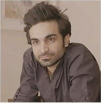
- Born1985
- FromHamedan, Iran
- Works27
- Dated2009–2014
- CatalogueContemporary Iranian Art, Tehran 2016
StatementAbout the work
Leaving the atmosphere
The present series is a continuation of my previous works: In which people or let's say subjects were sprinkling water at each other. In the present series we are faced with a fact that can be looked upon as a consequence of "water sprinkling".
In the previous series, the concept of water sprinkling more than anything else was revolving around education. water sprinkling with the intention to keep clean _ with regard to its traditional and favorite patterns _ wants to change, to reach to a desirable condition.
Part of our ingrained behaviors and habits throughout the history has been resulted from these deterrents. Habits that sometimes lead us into a mysterious world. A world that through interaction with our behaviors constructs these behaviors and gets constructed by them. We are "suspended" in this constructed world. Suspended in a situation between being tamed and producing a single identity.
Deterrent of the water sprinkling wants to: prevent the occurrence of a "powerful" and independent identity. So inevitably instead of creating our reality we leave its atmosphere and plunge into a mysterious world that emerges the same for everyone. A mysterious world in which the more we plunge into the more we get away from our reality.
The present series is the verisimilitude of the world that we are living in and since we are preoccupied with it every day, we have lost its true image. An image that we will not discover its mystery unless we change our point of view.
Bahman Mohammadi
Works27 artworks


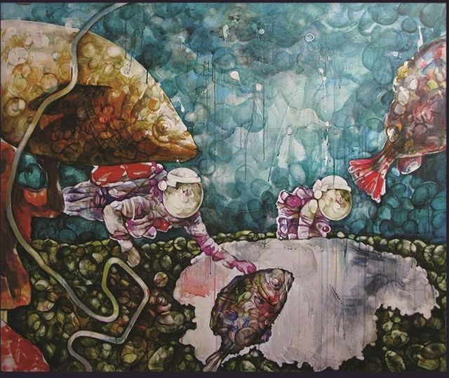

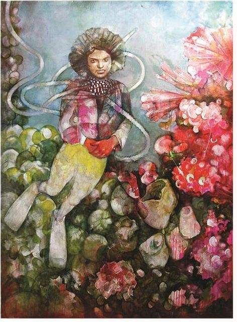

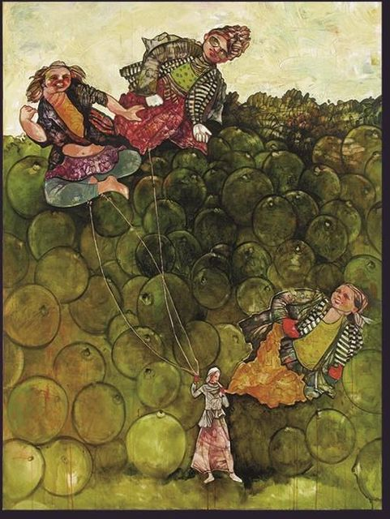

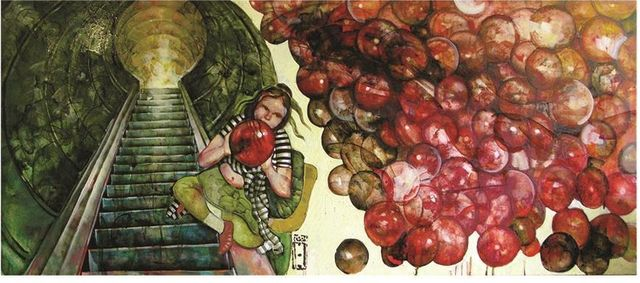
Outside this empty room
The Outside This Empty Room series is about photos; single-frames that work for me as a source to create stories, even long ones; stories that are usually come to being in the real world at the beginning, but they later grow up in my imagination. What I do here, in this empty room, is only to imagine, and to put the scattered elements of the story and the characters together to make a scene in which I could tell pleasant and unpleasant narratives that vigorously push themselves out of my mind every now and then. And even though these narratives emanate in this room, and are formed just when I'm watching my photo albums, they still seem real most of the times. Here, in my transient moods and moments, the objects and the people would conjoin one after another to indicate an exaggerated image of the reality from somewhere outside this room.
Bahman Mohammadi

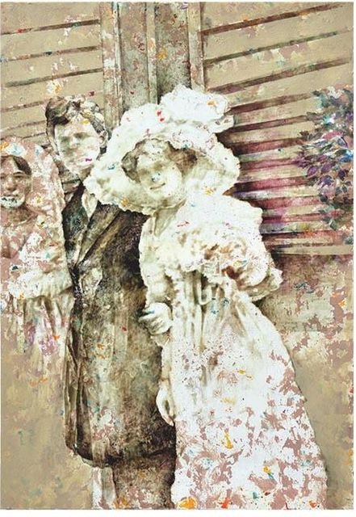

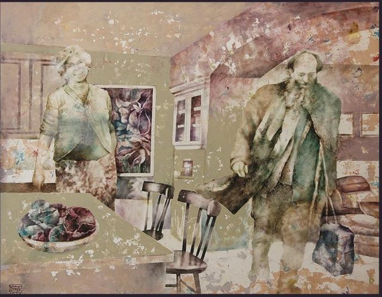

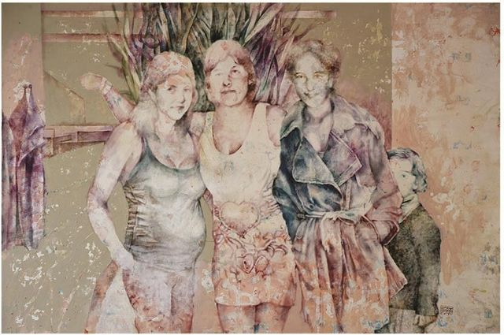

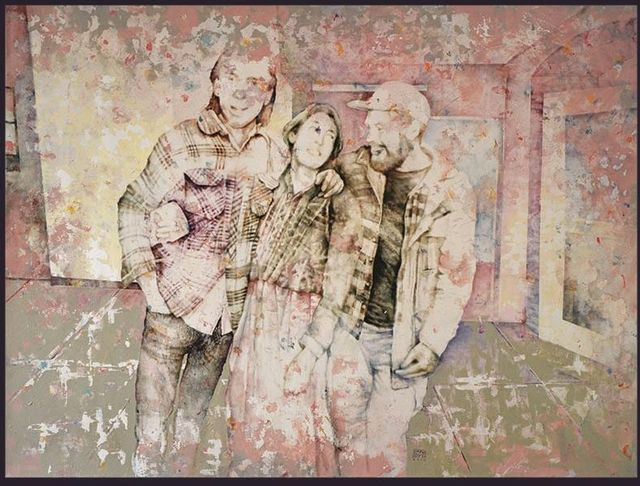

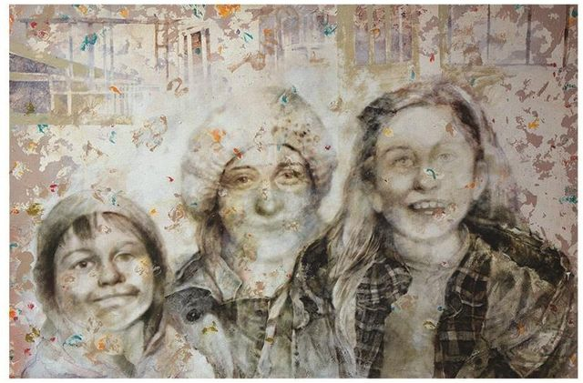

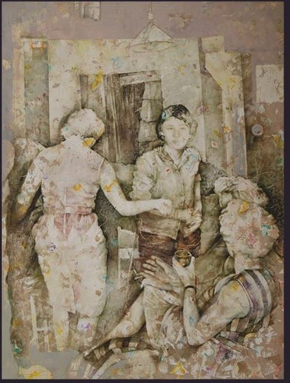

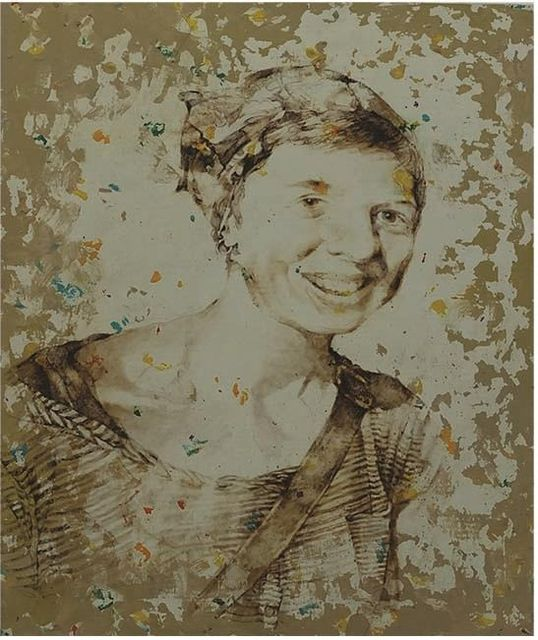

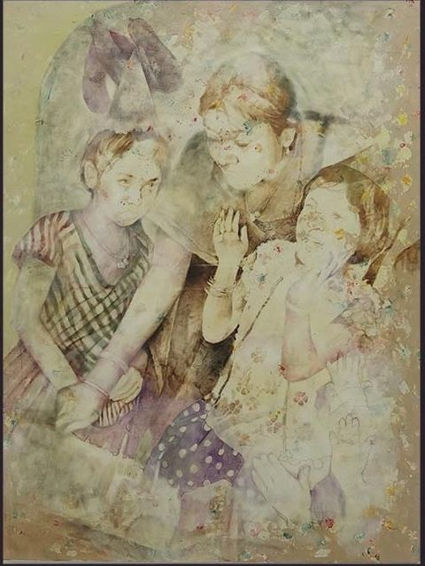

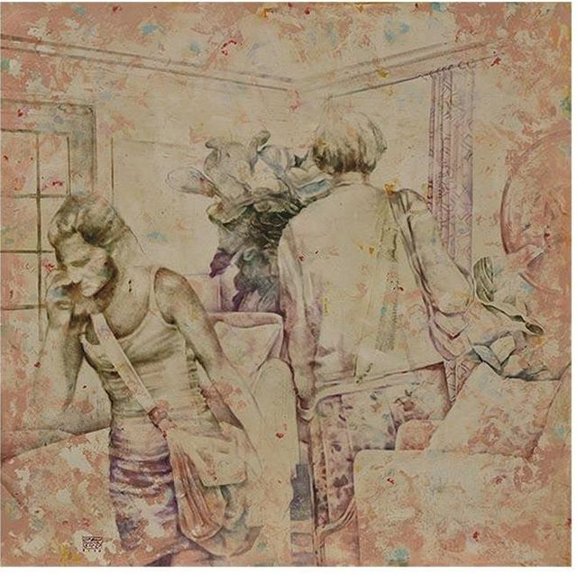
Water sprinkling
For me, water sprinkling is a way of purification/dicipline. These people are supposed to be purified in some stages of their nurture, so they need to be abluted. And through the ritual of purification, they will be cleansed from their separate existence and individuality, and they will gradually become a one united soul. So, to me, here, the water sprinkling is a unification mechanism.
Bahman Mohammadi

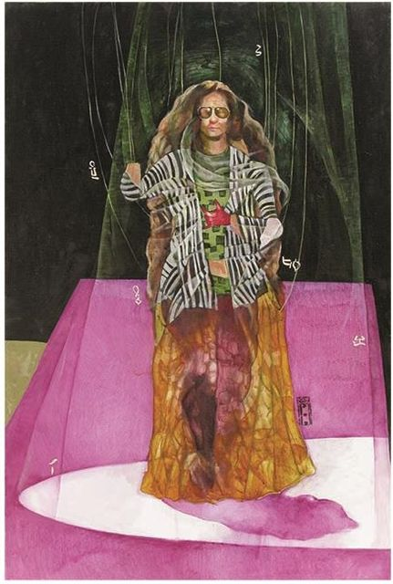

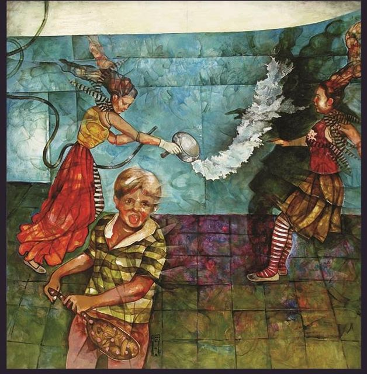

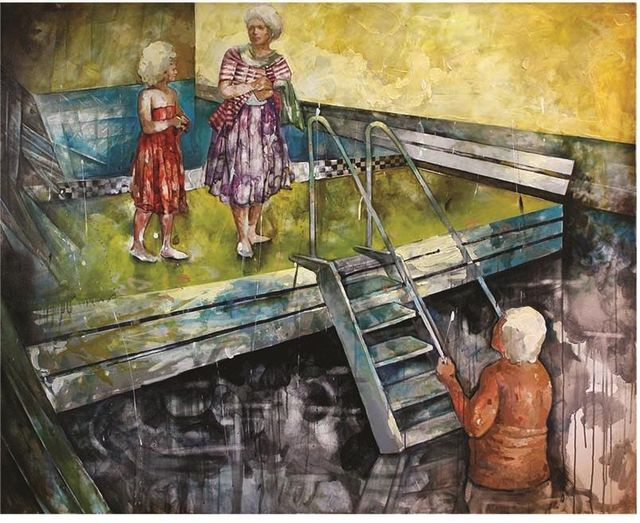
Lightness
This is a reaction against instability: that I paint these images on Photographic Paper (Litght-sensitive paper) and I use stationary process to fix them in a photographic way. Commponents of these images, same as everything, move and change. Subjects are constantly getting up and down, till the best moment to be treated and to be fixed.
Bahman Mohammad

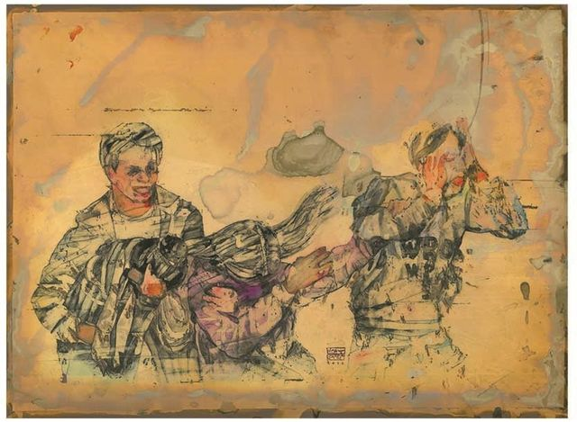

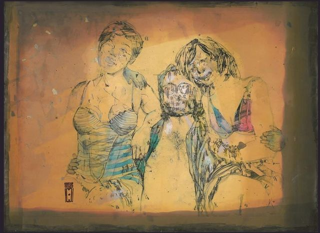

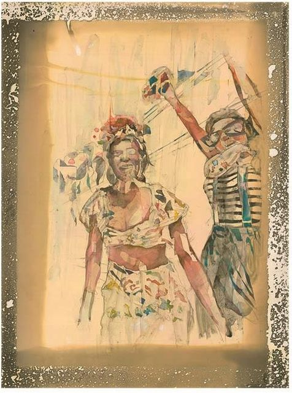

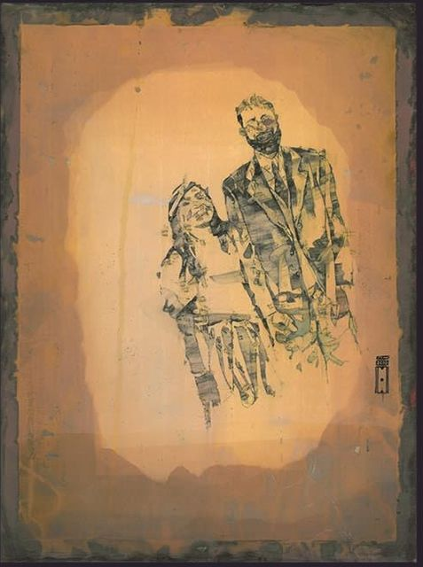

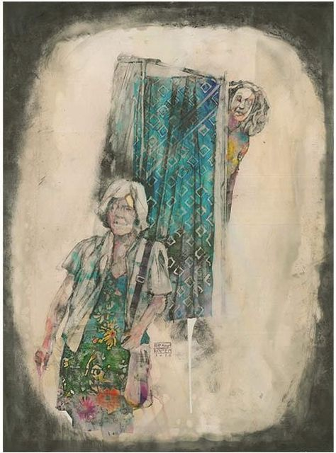

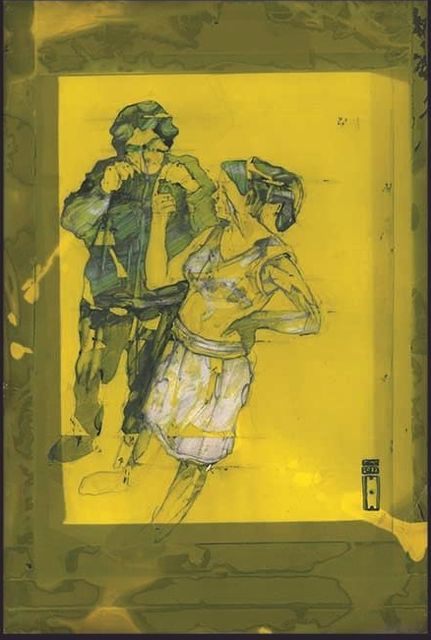

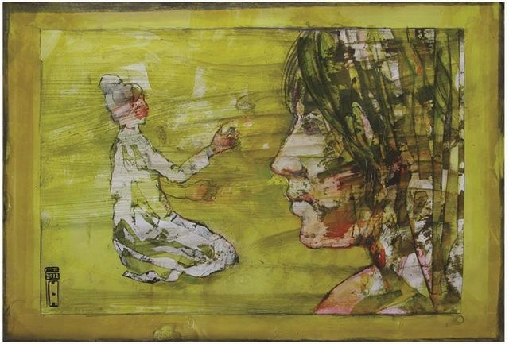
Mother and child series

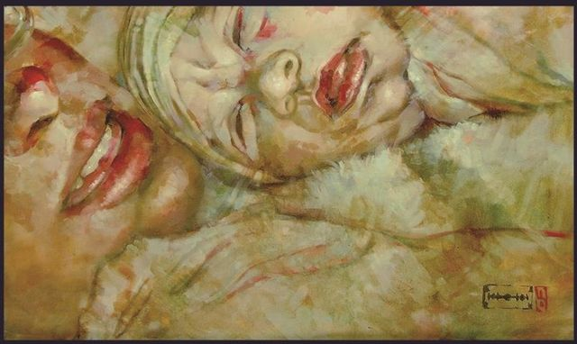

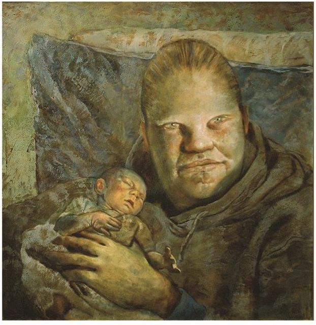

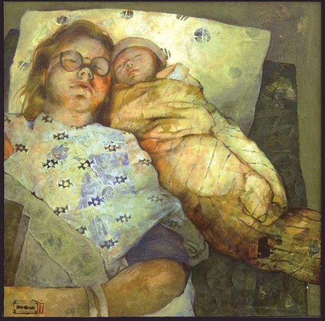
History of experienceBiography · education · exhibitions · awards
Education
- M.F.A in painting, Tehran university|Tehran – Iran
- B.F.A in painting, Shahed university|Tehran – Iran
- Association of Iranian painters
Awards
- 2008winner of 7th biennial of Iranian contemporary painting, Museum of contemporary art|Tehran – Iran
- 2006Winner of special prize from visual art festival (Damonfar), Niavaran cultural center|Tehran – Iran
- 2004Selected of realism and hyper realism, Niavaran cultural center|Tehran – Iran
Solo exhibitions
- 2015"Outside this empty room" Mah art gallery|Tehran – Iran
- 2011"Leaving the atmosphere", Homa art gallery|Tehran – Iran
- 2010"Water sprinkling", Homa art gallery|Tehran – Iran
- 2007'Mother and child", Aria art gallery|Tehran – Iran
Group exhibitions
- More than 40 Group Exhibition in...
- 2015Mah art gallery|Tehran – Iran
- 2014Homa art gallery|Tehran – Iran
- 2014Shirin art gallery|Tehran – Iran
- 2014Etemad art gallery|Tehran – Iran
- 2013Homa art gallery|Tehran – Iran
- 2013Ethan gallery New York|New York-USA
- 2012'Tehran art expo', Vahdat hall|Tehran – Iran
- 2013Niavaran cultural center|Tehran – Iran
- 2013Vali art gallery|Tehran – Iran
- 2012California state capital|California-USA
- 2012Aun art gallery|Tehran – Iran
- 2012Mohsen art gallery|Tehran – Iran
- 2012Aun art gallery|Tehran – Iran
- 2011Homa art gallery|Tehran – Iran
- 2011Shirin art gallery|Tehran – Iran
- 2011Mah art gallery|Tehran – Iran
- 2011Iran artist's forum|Tehran – Iran
- 2009Canvas gallery|New York-USA
- 2009Barg art gallery|Tehran – Iran
- 2009Art center gallery|Tehran – Iran
- 2009Nar art gallery|Tehran – Iran
- 2008Homa art gallery|Tehran – Iran
- 2007Mah e mehr art gallery|Tehran – Iran
- 2007Saba art gallery|Tehran – Iran
- 2007Museum of contemporary art|Tehran – Iran
- 2006Homa art gallery|Tehran – Iran
- 2006Niavaran cultural center|Tehran – Iran
- 2006Museum of contemporary art|Tehran – Iran
- 2004Niavaran cultural center|Tehran – Iran and
Publications and reviews
- published some article and art reviews in some newspapers and art journals since 2010
- been interviewed by some news agencies and newspapers such as ILNA, Mardomsalari, Farhang e ashti, etc.
Teaching experience
- 2010–2012Teaching art, University Of Farhang o honar
- since 2007Some Art Institutes
Source: the Sobhan Gallery artist catalogue “Sobhan Gallery. C. Bahman Mohammadi.pdf”.